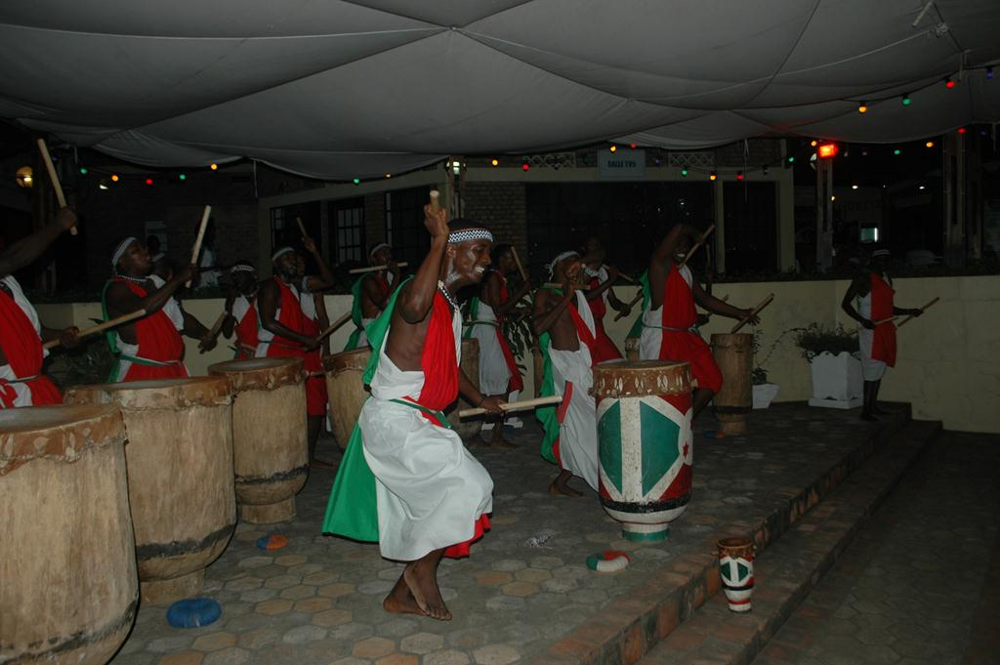

C’est dans la soirée de ce vendredi que les cérémonies de lancement du FESTICAB 2016 se sont tenus dans les enceintes de l’IFB. Différentes personnalités tant locales qu’internationales avaient honorés l’évènement par leurs présences. L’occasion de présenter aux festivaliers la suite des programmes durant la semaine.
Sur le rythme des tambours burundais et des danses traditionnelles sur la scène de l’Institut Français du Burundi, la fête a débuté dans une ambiance culturelle. Plusieurs personnalités se faisaient remarquer dans la salle. Et c’est Gerrit Van Rossum, Ambassadeur de la France au Burundi qui ait pris la parole en premier lieu.
"Nous déclarons ouvert le 8em FESTICAB !", c’est dans ces mots que J.Bosco Hitimana, Ministre de la Culture, de la Jeunesse et des Sports ont ouvert le festival. De cette cérémonie d’ouverture, nous retiendrons l’enthousiasme avec lequel Mme Njoki Muhoho, la Marraine de l’année a interpellé le public présent, « faisons accroître le cinéma africain comme un des grands contributeurs économiques en Afrique, malgré le taux de chômage qui touche sensiblement la Jeunesse ».
La Président du Festicab, Léonce Ngabo a rappelé que le thème choisi pour cette année est « Le cinéma au service de la réconciliation ». Un thème dont la raison d’être est de constituer un stimulus pour les jeunes cinéastes de promouvoir la réconciliation dans leur œuvres.
Au cours de la semaine festive, les festivaliers pourront découvrir les nouveaux talents des enfants journalistes, qui font déjà sensation dans la presse. Pour rappel, le Festicab 2016 s'étalera du 17 au 24 mai.
